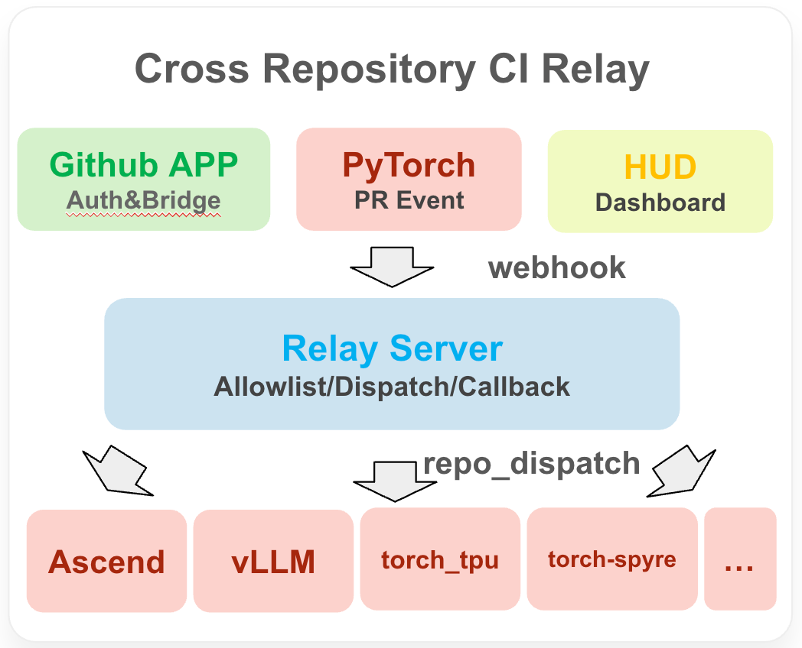
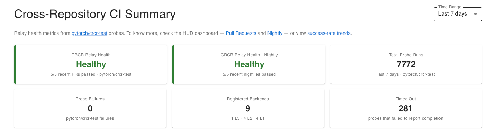
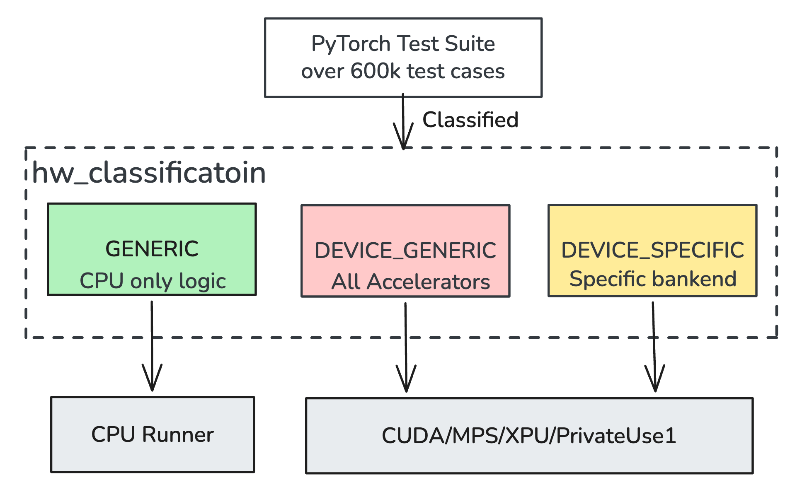
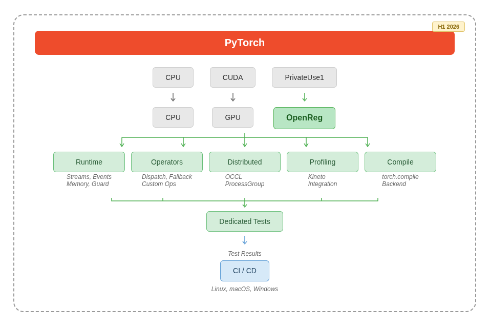
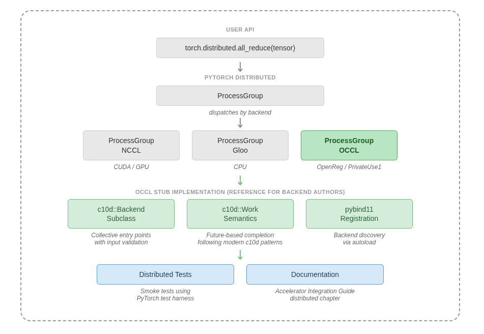

加速器集成工作组在新硬件架构如何接入开源AI生态的标准化上扮演关键角色。算力平台在云、端、专用芯片间持续分化，工作组建立厂商中立的集成机制，消灭定制补丁，减少生态碎片化。这篇博客总结2026年上半年的进展：关键基础设施改进、统一测试工作流，以及覆盖整个PyTorch平台的参考后端。
PyTorch硬件生态持续分化，越来越多AI算力平台采用原生框架集成。采用面扩大带来共同的社区挑战：理顺集成路径、降低复杂度、统一集成机制，并为异构算力平台建立可靠统一的验证基础设施。
这正是加速器集成工作组的核心使命。怀着"可扩展、包容的PyTorch硬件生态"的长期愿景，跨社区贡献者在上游框架改进、共享工具链和标准化参考实现上协作。
2026年上半年，多个核心工作流取得实质进展：测试套件重构以支持更广的跨后端复用、跨仓库CI中继（CRCR）机制、PrivateUse1后端的profiling支持、OpenReg参考后端的持续成熟、分布式能力支持、编译器后端集成，以及CI基础设施与可视化看板的增强。本文概述这些主要成果及其对整个生态系统PyTorch集成的影响。
作者：Subin George、Jiahao Chen、Jiahao Tan、Jiawei Li、Jewel K. M.
PyTorch社区推出了跨仓库CI中继（CRCR），一套旨在填补CI生态长期可见性缺口的新系统。PyTorch处在一个庞大的下游项目网络中心：Intel XPU、AMD ROCm、Apple MPS、高通AI Engine等加速器，以及通过PrivateUse1机制集成的各类加速器，还有vLLM、SGLang、Hugging Face Transformers等生态库。PyTorch上游CI本身成熟完备，但运行在pytorch/pytorch仓库内部，下游仓库没有标准方式知道何时该针对上游变更做测试、如何回传结果、如何跨项目关联失败。这带来显著的协同难题：PyTorch贡献者合入前无法判断PR是否影响其他后端，硬件维护者只能在变更提交后才被动反馈。
CRCR用全自动流水线解决这个问题：pytorch/pytorch有PR打开或commit推送时，webhook并行触发dispatch事件到所有注册的下游仓库。

每个仓库运行自己的CI工作流，通过鉴权回调回传状态，用GitHub OIDC token在密码学层面验证调用仓库的身份。结果数秒内流入PyTorch CI HUD（hud.pytorch.org/crcr），给维护者一个同时看树内与跨仓库CI健康的统一大盘。

系统用四级allowlist（L1-L4）做分级准入：下游仓库从简单的dispatch通知，逐步升级到完整HUD上报、非阻塞检查，最终到上游PR的阻塞检查。安全靠五层校验：OIDC身份验证、allowlist授权、限流、状态机检查、受信数据与自报数据的严格隔离：即便某个下游仓库被攻破，影响范围也只限该仓库自身展示的CI状态，动不了PyTorch真正的构建基础设施和合入决策。下游维护者接入成本极低：一条allowlist记录加一个轻量workflow文件，无需写任何自定义鉴权代码。
作者：Riya Punia、Tanmay Kumar、Jiahao Chen、Jiahao Tan、Jiawei Li
用PyTorch现有测试套件验证新加速器后端，是保证实现正确、尽早发现上游变更影响的最有效手段之一。PyTorch维护着60多万测试用例，覆盖算子、autograd、profiling、分布式训练等：理论上任何后端都能复用的庞大验证面。但实践中，很多测试是为特定加速器写的：设备字符串、profiler activity、内存API、skip装饰器到处硬编码，测试逻辑与具体后端紧耦合，而非设备无关的表达。重构之前，唯一选择是打补丁维护定制测试用例；每次PyTorch升级都要大量手工活，而PyTorch越来越快的发版节奏让重复劳动雪上加霜。
2026年上半年，工作组启动系统性工程，把PyTorch测试套件与具体硬件解耦。进展通过中央跟踪issue、测试用例重构RFC、测试类分级RFC跟踪，PyTorch测试重构项目共跟踪259项。

● 设备无关的测试迁移：把硬编码的设备引用（device="cuda"、torch.cuda.synchronize()、onlyCUDA）换成parameterize等价写法（device=device、getattr(torch, device.type)、instantiate_device_type_tests()）。每个测试类按三类划分：加速器无关（纯CPU，面向Dispatcher等通用特性）、加速器通用（设备参数化，全后端可跑）、加速器专用（绑定某后端内部API）。上半年贡献者迁移了276个测试文件，覆盖dynamo、profiler、nn模块、linalg、优化器、卷积、序列化、多进程、dataloader。
● 硬件分级元数据：在Alban提出的测试类分级基础上，工作组实现hw_classification类属性（GENERIC、DEVICE_GENERIC、CUDA、XPU、MPS），并在全部执行路径（unittest、pytest、subprocess、并行、XML输出、run_test.py转发）加--hw-classification标志，让CI runner自动为自家硬件选对测试子集。
● CI护栏：HW_CLASSIFICATION linter强制每个新测试类声明分级。存量未分级文件（启动时1191个）进allowlist，按与PyTorch维护者约定的分阶段节奏逐步清零；未来计划加一层AI linter做更精细的检查。
对加速器开发者，这些变化彻底改变了上手体验：不用再为适配自家硬件给一堆测试文件打补丁，靠instantiate_device_type_tests()就能为自家后端自动生成测试变体。以前因onlyCUDA门控或device="cuda"硬编码而对非CUDA后端不可见的测试，现在任何注册加速器都能跑。一份设备无关的测试，同时在CUDA、MPS、XPU、ROCm、PrivateUse1后端产出有效的验证配置。
对PyTorch项目本身，hw_classification系统是基础设施底座：提议类级别的硬件与频率元数据，减少重复测试、提升CI可观测性、合理化测试调度。上半年把测试迁入正确分级的工作正是这一愿景的硬性前置。对更广的生态，多级测试跳过机制（按特性、类、测试、算子）叠加硬件分级，让后端厂商按实现成熟度精细控制跑哪些、跳过哪些：不用改上游测试代码。
下半年的重点是把未分级allowlist压到零，把设备无关覆盖扩展到分布式、JIT、autograd模块，并把hw_classification接入CI调度、按runner自动选测试。工作组还在探索声明式的逐算子能力注册表，让加速器声明支持的dtype和精度覆盖，不用改上游OpInfo条目。
作者：Vishal Goyal、Anisha Kushwaha
新硬件加速器要接入PyTorch profiling，光有算子级计时不够。厂商需要内核级时间线、内存与运行时事件、Chrome/Perfetto trace里CPU-设备关联的清晰契约。没有开箱即用的树外参考，后端开发者只剩两个不完整的选项：祖传ProfilerStubs/KINETO_PRIVATEUSE1_FALLBACK路径（只记录粗粒度的每算子设备时间），或反向工程CUPTI、XPUPTI这类树内Kineto插件（把厂商专用工具链和集成模式本身混在一起）。
2026年上半年，profiling沿用OpenReg一贯的极简stub风格：不做生产级profiler，只演示集成机制。基于PyTorch核心注册API（REGISTER_PRIVATEUSE1_PROFILER），树外后端无需改PyTorch或Kineto即可把IActivityProfiler插进Kineto；工作组落地了OpenReg参考stub栈（tracer加IActivityProfiler/session，RFC #177978），覆盖session生命周期、activity类型、关联ID，并用torch.profiler做了端到端session生命周期与fallback测试，祖传stub路径和Kineto插件路径的文档也补齐了。
对加速器开发者，OpenReg profiling路径给内核级bring-up一个具体起点：不用反向工程Kineto里的CUPTI式插件，也不用将就于ProfilerStubs的粗计时，跟着一份极简stub实现就能看清树外后端如何注册IActivityProfiler、管理session生命周期、打通关联ID调用链：然后把stub函数体换成自家设备profiling SDK（PTI）调用，PyTorch和Kineto都不用动。只需要算子级计时时，祖传stub fallback依然可用。
对更广的PyTorch生态，这把PrivateUse1 profiling变成经过验证的集成面，而非每家厂商往Kineto源码树里加私货。端到端torch.profiler测试尽早捕获注册、session生命周期、fallback的回归；stub参考与文档保持对齐，任何后端都可以信任这套工作流。
作者：Mansi Agarwal、Jiahao Chen、Jiahao Tan
新硬件加速器接入PyTorch要实现的功能面很宽：设备注册、算子分发、stream与event管理、autograd集成等等。没有可用的参考，后端开发者常常去反向工程生产级后端，把设备专属优化和集成模式本身混为一谈。
OpenReg是PyTorch树内的PrivateUse1加速器集成参考后端。OpenReg不是生产后端：而是极简的CPU-backed实现，把集成机制从硬件复杂度里剥离出来。2026年上半年聚焦三件事：扩大核心集成模式覆盖（设备注册、算子分发、stream、event），收紧OpenReg实现与加速器集成文档的对应关系，通过测试与CI强化OpenReg作为PrivateUse1集成路径验证基石的角色。
对加速器开发者，OpenReg是bring-up工作的具体起点：不用从散落的示例和生产后端里拼凑集成模式，跟着一份极简实现就能看清树外后端应该如何与PyTorch交互：从设备模块注册，到算子分发，再到运行时行为。
对更广的PyTorch生态，OpenReg是回归守卫：跑在CI里，PyTorch演进时验证PrivateUse1集成机制依然稳定，把breakage拦在到达下游硬件厂商之前。OpenReg与加速器集成文档对得越紧，文档化的工作流就越可信：在OpenReg里跑得通，在后端就跑得通。同时是后文分布式训练、编译后端支持、profiling等高级集成路径的共同底座，都建在OpenReg确立并验证的基础模式之上。
下半年，OpenReg会继续扩展到更多PyTorch子系统，同时验证PrivateUse1集成路径跨版本保持稳定。

作者：Mansi Agarwal、Atharva Kshirsagar
分布式训练是大模型开发的核心需求，但新加速器要接入PyTorch分布式栈，得趟过很宽的功能面：自定义传输、ProcessGroup注册、集合通信分发、多进程协同。没有清晰的参考，后端作者很难跟。
2026年上半年，工作组开始填这个坑：构建OCCL（OpenReg Collective Communications Library），OpenReg的极简c10d自定义后端参考实现（RFC #176877）。不追求生产性能，目标是把主要集成点摊开讲明白：展示后端如何注册ProcessGroup、分发集合通信、管理Work完成语义，并与PyTorch分布式抽象对齐。
这项工作也改善了周边的集成体验：工作组贡献者给加速器集成指南补了文档，并推动PyTorch分布式基础设施的上游改进，包括更好地支持Python实现的后端和设备通用的分布式测试选择。
对加速器开发者，OCCL给新后端加分布式支持一个清晰得多的起点。此前厂商常常要研读NCCL这类生产后端来反推c10d集成契约；那些后端生产中不可或缺，但与硬件专用通信库紧耦合，不适合当学习材料。

OCCL用一条独立于硬件的路径穿过分布式集成的核心环节，让契约好懂得多：后端作者能跟着一个更简单的模型，看清ProcessGroup注册、集合通信执行、完成语义在PyTorch内部如何咬合。叠加上游相关改进，新加速器在PyTorch现有基础设施上做分布式训练bring-up，地基更可靠。
作者：Parshant Sharma
编译器集成是任何想在PyTorch里好好工作的加速器的重要一环。新加速器要接torch.compile，得趟过很宽的功能面：Dynamo里的图捕获与设备管理，想吃优化pass的厂商还要碰Inductor的调度、融合、代码生成。没有清晰的参考，后端作者常常研读CUDA、Triton这类生产集成来拼凑注册契约：这条路难走，因为硬件专属优化和底层集成机制搅在一起。这项工作（RFC #181093）正是来填这个坑的。
不追求生产性能，目标是把Dynamo与Inductor的集成点摊开讲明白：用OpenReg展示设备后端如何在编译栈的两层注册、验证图捕获、生成融合内核，全程不用改上游PyTorch代码。
代码之外，这项工作还暴露了现有文档与开发者体验的缺口。工作组给加速器集成指南补了torch.compile章节，澄清了设备无关的图捕获、后端注册、Inductor wrapper代码生成等主题：这些内容以前只存在于特定后端的代码和口口相传的经验里。
这项工作给新后端加编译器支持一个清晰得多的起点。此前厂商常常研读CUDA和Triton代码路径来反推注册契约；那些后端生产中不可或缺，但与硬件专属的调度、代码生成策略紧耦合。
顺着Dynamo后端与Inductor集成，后端作者能看清Dynamo图捕获、Inductor调度、wrapper代码生成、设备算子覆盖在PyTorch内部如何咬合。这给树外后端做torch.compile bring-up打下更可靠的地基：从基础图捕获，一路到融合内核生成，全在PyTorch现有基础设施里。
作者：Jiahao Chen、Jiawei Li
很长时间里，PyTorch社区用户缺少一个官方渠道了解PyTorch对新后端的支持情况。PyTorch新增平台页面（Additional Platforms page）现在是pytorch.org上由基金会管理的计算平台官方主页，每个PyTorch用户都会访问的主安装页直接链向该页面。为防止页面沦为自说自话的布告栏，加速器集成工作组用正式的准入流程来运营。
申请刻意做得很简单：开一个Additional Compute Platform Application issue，按每条要求提供证据（链接、文档、CI看板、安全策略等），提交即可。
下半年，工作组积极鼓励更多加速器厂商申请，尤其欢迎已经完成集成工作的厂商。
加速器集成工作组2026年上半年的进展，展示了开源AI中厂商中立协作的力量。通过建立标准化的测试、profiling、编译器支持、分布式执行路径，社区打下了一个地基：硬件创新可以繁荣，而框架不必碎裂。随着芯片架构持续演进，这些标准化集成机制确保新算力平台平滑达到生产就绪。
想了解进行中的工作流或参与定义下一代PyTorch硬件支持，访问加速器集成工作组仓库（github.com/pytorch-fdn/accelerator-integration-wg），或到PyTorch技术咨询委员会工作组页面（pytorch.org/working-groups）加入社区讨论。
参考：https://pytorch.org/blog/pytorch-hardware-enablement-updates-from-the-acceleration-integration-working-group/